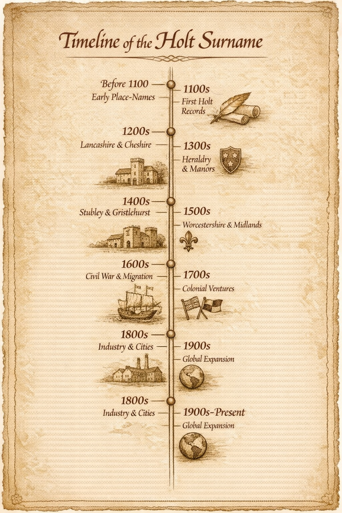

Origins & Surname Timeline
This timeline traces the documented history of the Holt surname from its early medieval origins to the present day. It brings together place‑names, records, and major family branches to show how the name emerged, spread, and endured.
This page is about documented people, dates, and the chronological development of the surname. It answers questions like:- When do we first see Holt individuals in records?
- When do Stubley, Gristlehurst, Aston, and Worcestershire lines appear?
- How does the surname spread century by century?
- When do Holts migrate to Ireland, America, Australia?

Before 1100 — Landscape and place-name origins
- holt in Old English denotes a wood, thicket, or copse, often attached to settlements near woodland.
- Early forms of Holt appear as place‑names in Cheshire, Lancashire, Worcestershire, and neighbouring counties, usually marking wooded land or enclosed groves.
- In this period holt is descriptive rather than hereditary, used to identify locations rather than families.
12th century — Earliest recorded Holt individuals
- Individuals begin to be identified as “of Holt” or “de Holte”, linking them to specific estates or settlements.
- Monastic and lay charters record early bearers of the name in northern and midland counties, often as witnesses to land transactions.
- By the late 12th century, de Holte is increasingly used in a way that suggests a hereditary family identity rather than a purely descriptive label.
13th century — Establishment in Lancashire and Cheshire
- Lay subsidies and other fiscal records show Holt families established in Lancashire and Cheshire, often as free tenants or minor gentry.
- The name appears in manorial rolls, linking Holt individuals to specific townships, fields, and customary obligations.
- The first associations between Holt families and distinct coats of arms begin to emerge, marking the rise of identifiable lines.
14th century — Consolidation and early branches
- The Black Death and subsequent demographic changes reshape local communities, but Holt families remain visible in northern records.
- Documentary evidence points to the formation and consolidation of Holt lines at Stubley and Gristlehurst in Lancashire.
- Appearances in court rolls, feudal aids, and inquisitions post mortem show Holts holding land, serving on juries, and acting as local officials.
15th century — Regional spread and gentry status
- The Lancashire Holts strengthen their position through landholding, marriage alliances, and service in local administration.
- References to Holts in Worcestershire, Warwickshire, and neighbouring counties indicate the surname’s growing reach beyond its northern core.
- Coats of arms associated with particular Holt houses become more firmly established, reflecting recognised gentry status in several branches.
16th century — Reformation records and wider movement
- The introduction and survival of parish registers bring Holt baptisms, marriages, and burials into clearer view across multiple counties.
- Probate records and recusancy lists document the religious and social positions of Holt families during the upheavals of the Reformation.
- Holts begin to appear more frequently in London and other towns, including in guild and apprenticeship records.
17th century — Civil War and early overseas migration
- Members of the Stubley, Gristlehurst, and other Holt lines are drawn into the conflicts of the mid‑17th century, leaving traces in military and sequestration records.
- Holt individuals are recorded in Ireland and in the early English colonies of North America and the Caribbean, marking the beginning of a wider diaspora.
- Holts appear as clergy, lawyers, merchants, and officers, reflecting a diversification of status and occupation.
18th century — Commerce, industry, and mobility
- Directories and newspaper notices show Holt families active in trade, manufacturing, and finance in growing towns and cities.
- Movement into industrial centres such as Manchester, Birmingham, and the expanding London suburbs accelerates.
- Established Holt lines in Britain develop enduring connections with relatives in North America and other colonies.
19th century — Census era and global migration
- National censuses make it possible to map the distribution of the Holt surname across England, Wales, Scotland, and Ireland with precision.
- Significant numbers of Holts emigrate to the United States, Canada, Australia, New Zealand, and South Africa, often for industrial, agricultural, or mining opportunities.
- Holts appear in politics, industry, philanthropy, and the arts, leaving a more visible public record in newspapers and printed biographies.
20th century to present — A global surname
- Military records from the First and Second World Wars contain many Holt servicemen and women across the Commonwealth and beyond.
- By the late 20th century, the Holt surname is firmly established on several continents, with major concentrations in the UK, North America, and Australasia.
- Digitised archives, DNA projects, and collaborative family history platforms now allow Holt descendants worldwide to reconnect their branches to earlier English roots.